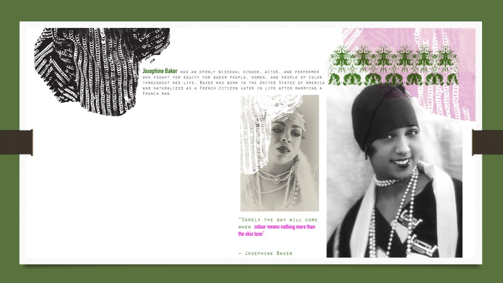

📚 Research Page Development
Adding Secondary Research with Factual Content & Digital Integration
⏰ Workshop Structure (2.5 hours)
TASK 1 (45 mins)
Find secondary image, write quote & reference
TASK 2 (75 mins)
Apply digital skill to integrate into scanned A3
TASK 3 (30 mins)
Progress report: challenges & learning
🎯 Today's Learning Objectives
By the end of this lesson, you will have:
- Added a new secondary research image to support your project theme
- Written a subtitle that clearly articulates your area of research focus
- Included factual information with a properly formatted quote and reference
- Applied a digital skill to integrate this content into a scanned A3 physical page
- Documented your process and challenges in a progress report
Why This Matters
Research pages are the foundation of your portfolio. They demonstrate your ability to investigate, understand, and articulate ideas. Vague subtitles like "Textures" or "Colours" tell the examiner nothing about your specific research focus. Strong research pages include factual content that shows genuine understanding.

Research Page Example: Pritika Ahuja
Shows: Clear subtitle • Secondary image • Factual text with quote • Harvard reference • Digital integration
Choose Your Digital Skill
Before starting, review the skills from previous workshops. You'll choose ONE technique to use in Task 2 when integrating your research into your scanned A3 page.
📚 Quick Reference: Previous Workshop Skills
+💡 Decision Point
- Which research page in your portfolio needs additional secondary research?
- Which digital skill from the list above will you use to integrate your new content?
Time Allocation: 45 Minutes
Research & find image: 15 mins → Write subtitle & quote: 15 mins → Format reference & upload: 15 mins
What You Need to Do
Find a secondary research image that supports and expands on your existing research page. This should add depth to your investigation, not simply repeat what you already have.
Writing a Strong Subtitle
Your subtitle must clearly articulate your specific area of research focus — not a vague label.

Weak Research Page
Vague subtitle • No quote • No reference

Strong Research Page
Specific subtitle • Relevant quote • Harvard reference
📚 Harvard Referencing Format
Artist's Last Name, First Initial. (Year). Title of the work [Image].
van Herpen, I. (2019). Hypnosis Collection [Image].
"Quote text here" (Author's Last Name, Year, p. Page Number).
Task 1 Workflow
Search for an image that:
- Relates to and expands your existing research theme
- Comes from a credible source (artist website, museum, academic source)
- Has clear attribution information (artist name, year, title)
Create a subtitle that clearly states what aspect of your research this image represents. Ask yourself: "If someone only read this subtitle, would they understand my specific focus?"
Write 2-3 sentences of factual content about your image/research area. Include at least one quote from a relevant source.
Write the Harvard reference for your image and for any quotes you've included.
Upload your secondary image along with your subtitle, factual content, quote, and references to Padlet.
📤 Upload Task 1
Upload your secondary image with subtitle, factual content (including quote), and Harvard reference.
Upload to Padlet →Time Allocation: 75 Minutes
Scan A3 page: 10 mins → Apply digital skill: 50 mins → Refine & export: 15 mins
What You Need to Do
Take your physical A3 research page (or a page in progress), scan it, and digitally integrate your new secondary image, subtitle, quote, and reference using a digital skill from the workshop series.
BEFORE: Scanned Physical Page

Your scanned A3 page with physical work
AFTER: Digitally Enhanced

Physical + Digital: Secondary image, subtitle, quote & reference integrated
📋 Before You Start, Make Sure You Have:
Digital Skill Application Examples

Turn monoprints into digital brushes

Subtitle following a curve or shape

AI-created visual background for subtitle

Key detail scaled as focal point
Task 2 Workflow
Scan your physical research page at 300 dpi. Save as TIFF or high-quality JPEG.
Create new layers for:
- Your secondary image
- Your subtitle text
- Your factual content and quote
- Your reference
Apply the digital skill you chose from the Quick Reference guide:
- Threshold effect on your secondary image for high contrast
- Text on path for your subtitle to follow a curve
- Generative Fill to create a visual background
- Layer masks & blend modes to integrate image
- Custom brush to add graphic elements
Typography guidelines:
- Body text: 12-14pt maximum
- Subtitles: Different style, not just bigger size
- References: Can be smaller (9-10pt) near the image
Export as:
- PSD — Save your working file with layers
- JPEG (300 dpi) — For upload and portfolio
💡 Integration Tips
- Your digital additions should enhance the physical page, not overwhelm it
- Consider how the new elements relate visually to existing content
- Use consistent colour palette between physical and digital elements
- The subtitle should be clearly readable
📤 Upload Task 2
Upload your completed integrated A3 page showing your physical work combined with digital elements.
Upload to Padlet →Time Allocation: 30 Minutes
Take screenshots: 10 mins → Write reflection: 15 mins → Upload: 5 mins
What You Need to Do
Document your process from today's lesson. This progress report captures not just what you created, but what challenges you faced and what you learned.

Progress Report Template
Before screenshot • After screenshot • Challenges faced • Solutions tried • What you learned
The Four Reflection Questions
Digital Skill Used
Name the technique and workshop it came from
Challenges Faced
Technical difficulties, creative decisions, time management
Solutions Tried
What did you try? What worked?
What You Learned
New skills, insights, discoveries about your process
Task 3 Workflow
Capture screenshots showing:
- Your original scanned A3 page (before digital work)
- Key stages of your digital integration process
- Your final completed page
Mac: ⌘ + Shift + 3 or ⌘ + Shift + 4
Windows: Windows + Shift + S
Use the Progress Documentation Tool to compile your screenshots and write your reflection notes.
Answer the four reflection questions thoughtfully. Be specific about your challenges and learning.
Export your progress report as PDF or JPEG from the documentation tool. Upload to Padlet.
💡 Reflection Tips
- Be honest about challenges — struggles are part of learning, not failures
- Be specific — "I struggled to blend the digital text with the hand-drawn elements because..." is better than "I found it hard"
- Connect to future work — how will what you learned today help you?
- Include before/after images — visual evidence of your progress is powerful
📝 Progress Documentation Tool
Record your progress, add screenshots with captions, rate your confidence, and answer reflection questions.
Open Progress Tool →✅ End of Lesson Checklist
📤 Upload Your Progress Report
Once you've completed your Progress Report, upload it to Padlet.